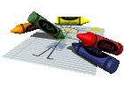
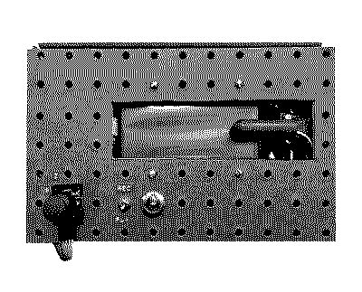
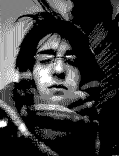

adlow.online 
portmanteau of aidan loseke (portfolio)
hardware
(custom instruments, controllers and noisemakers)
| img | title / link | desc |
|---|---|---|
|  | (θ,z) Crosstalk Echo | a dual axis computer controlled tape looper, allowing for boundless recording in a finite space. A joystick gives control to the speed and direction of rotation for a foot long loop of 2" tape, with the playhead arm mounted on a linear actutor. navigate a lo-fi canvas of magnetic flux in two dimensions |
 |
The Magnemonium | a two string drone box, actuated by programmable electromagnetic resonators. frequency values for either string can be set and recalled at will, allowing for discreet and instant control of the harmonics excited by the magnets. play and tweak 6 lush harmonic dyads |
| Drawman | a cassette walkman, rehoused into a TV remote to be held as a stylus. Used in perfomance for CCC Manifest 2024. |
graphics
(design, video art, etc., organized by category)
| posters/flyers | video art | packaging |
|---|---|---|
| click me | click me | click me |
sounds
(audio, releases, compositions and sound explorations.)
| cover | title | desc |
|---|---|---|
 |
dissolved it all | exper. ambient work, 2024 |
| To forget life, to be at peace | piece for highschool wind ensemble, 2020 |
about
Aidan Loseke is a multimedia artist, maker, and multi-instrumentalist currently based in Chicago. He performs and releases music under the name 'adlow'. He is on Instagram, Bandcamp, Spotify, SoundCloud, and Apple Music
Contact: adlow(dot)online(at)gmail(dot)com